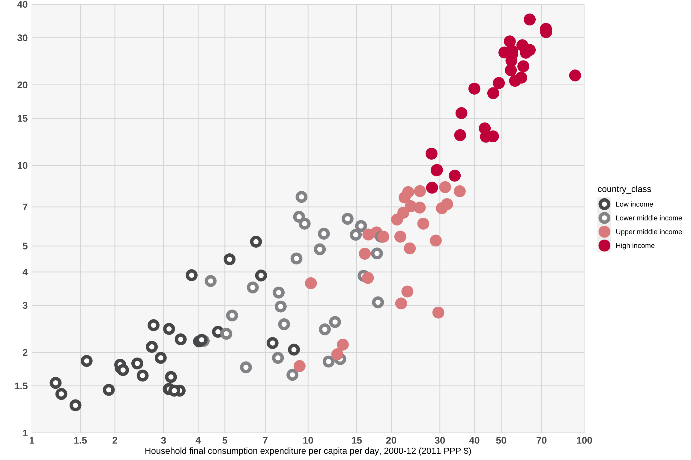
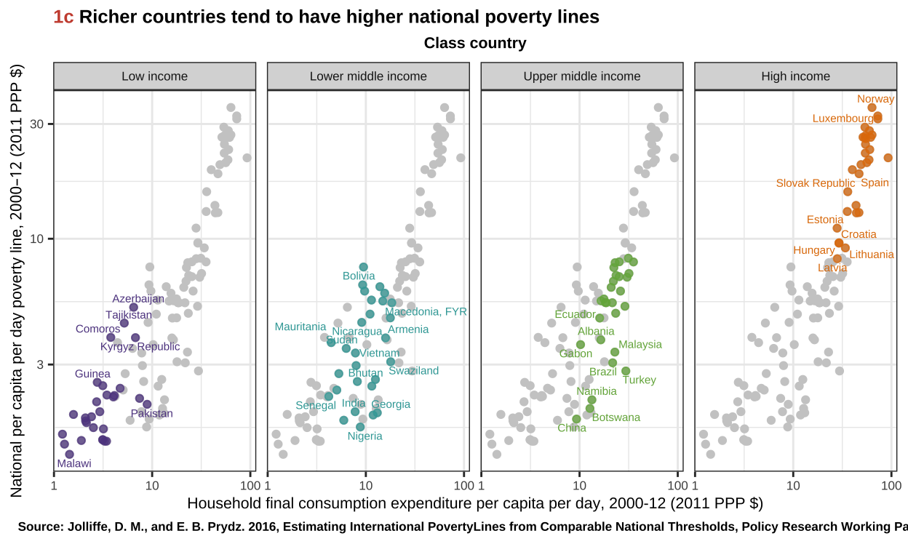

The Atlas of Sustainable Development Goals is a compilation of statistics from over 200 economies about global development and the quality of peoples lives. The Atlas is a visual guide to the trends, challenges and measurement issues related to each of the 17 Sustainable Development Goals (SDGs). The SDGs are an urgent call for action by all countries in a global partnership. The Atlas was first created in 2017 and since then two more editions have been published, 2018 and 2020. From 2017 to 2020 there has been a big change in the visualization of the data.. Therefore, for this project I have decided to focus on recreating a chart from the first Atlas and improve some elements to better represent the idea that richer countries tend to have higher national poverty lines.
Sustainable Development Goals
| 1. No poverty | 2. Zero hunger |
| End poverty in all its forms everywhere | End hunger, achieve food security and improved nutrition, and promote sustainable agriculture |
| 3. Good health and well-being | 4. Quality education |
| Ensure healthy lives and promote well-being for all at all ages | Ensure inclusive and equitable quality education and promote lifelong learning opportunities for all |
| 5. Gender equality | 6. Clean water and sanitation |
| Achieve gender equality and empower all women and girls | Ensure availability and sustainable management of water and sanitation for all |
| 7. Affordable and clean energy | 8. Decent work and economic growth |
| Ensure access to affordable, reliable, sustainable, and modern energy for all | Promote sustained, inclusive, and sustainable economic growth, full and productive employment, and decent work for all |
| 9. Industry, innovation, and infrastructure | 10. Reduced inequalities |
| Build resilient infrastructure, promote inclusive and sustainable industrialization, and foster innovation | Reduce inequality within and among countries |
| 11. Sustainable cities and communities | 12. Responsible consumption and production |
| Make cities and human settlements inclusive, safe, resilient, and sustainable | Ensure sustainable consumption and production patterns |
| 13. Climate action | 14. Life below water |
| Take urgent action to combat climate change and its impacts by regulating emissions and promoting developments in renewable energy | Conserve and sustainably use the oceans, seas and marine resources for sustainable development |
| 15. Life on land | 16. Peace, justice and strong institutions |
| Protect, restore and promote sustainable use of terrestrial ecosystems, sustainably manage forests, combat desertification, and halt and reverse land degradation and halt biodiversity loss | Promote peaceful and inclusive societies for sustainable development, provide access to justice for all and build effective, accountable and inclusive institutions at all levels |
| 17. Partnership for the goals | |
| Strengthen the means of implementation and revitalize the global partnership for sustainable development |
The chart I have chosen is from the first SDGs: No poverty. In the section on Reducing poverty in all its dimensions according to national definitions, the figure 1c is introduced to represent how richer countries tend to have higher national poverty lines than poorer ones, and in some cases a richer country may even have a higher national poverty rate than a poorer country.

Getting the data
The data consist on country observations of national poverty lines and household final consumption expenditure (HFCE). I retrieved the data from the Jolliffe & Beer Prydz (2016) paper on Estimating International Poverty Lines from Comparable National Thresholds. In the Appendix 2: Poverty lines and economic variables, used in main specifications, there is a table with the data required to replicate the chart.
Libraries
I created the csv file coping the data from the Appendix 2 table. The variables needed to recreate the chart are the following:
world_bank <- read_delim(
"povertyline.csv", delim = ";", escape_double = FALSE,
col_types = cols(`National poverty line 2011 PPPs` = col_number(),
`Household survey mean 2011 PPPs` = col_number(),
`HFCE (2011 PPPs)` = col_number(),
`GNI (2011 USD, Atlas)` = col_number()),
trim_ws = TRUE, skip = 1)
world_bank <- world_bank %>%
janitor::clean_names() %>%
select(-c(source_of_national_poverty_rate)) %>%
rename("country" = country_territory,
"national_povt_line" = national_poverty_line_2011_pp_ps,
"household_survey" = household_survey_mean_2011_pp_ps,
"HFCE" = hfce_2011_pp_ps,
"GNI" = gni_2011_usd_atlas) glimpse(world_bank)Rows: 126
Columns: 6
$ country <chr> "Zambia", "West Bank and Gaza", "Vietnam"
$ year <dbl> 2007, 2009, 2012, 2006, 2011, 2010, 2011,
$ national_povt_line <dbl> 1.83, 6.06, 3.35, 6.28, 6.92, 21.70, 21.2
$ household_survey <dbl> 2.66, 10.76, 8.07, 11.63, 23.09, 62.38, 4
$ HFCE <dbl> NA, 9.72, 7.83, 20.99, 30.49, 92.57, 59.1
$ GNI <dbl> 2.62, 5.91, 4.23, 18.59, 32.90, 136.28, 1summary(world_bank) country year national_povt_line
Length:126 Min. :2001 Min. : 1.270
Class :character 1st Qu.:2009 1st Qu.: 2.203
Mode :character Median :2011 Median : 4.585
Mean :2010 Mean : 7.872
3rd Qu.:2011 3rd Qu.: 8.290
Max. :2012 Max. :35.120
household_survey HFCE GNI
Min. : 1.450 Min. : 1.220 Min. : 0.43
1st Qu.: 3.865 1st Qu.: 5.635 1st Qu.: 2.77
Median : 9.335 Median :15.880 Median : 11.04
Mean : 22.403 Mean :22.083 Mean : 33.57
3rd Qu.: 20.523 3rd Qu.:30.915 3rd Qu.: 35.51
Max. :800.000 Max. :92.570 Max. :247.32
NA's :11 NA's :2 Country groups
The World Bank has an income classification by which it separates countries into four categories based on per capita gross national income (GNI): low-income, lower-middle, upper-middle, and high-income countries. To create the categories, I first calculated the GNI per capita quartile:
quantile(world_bank$GNI, na.rm=TRUE) 0% 25% 50% 75% 100%
0.430 2.770 11.040 35.505 247.320 After calculating GNI per capita quartile, I create a new column to group each country in its corresponding category:
qntile <- world_bank %>%
mutate(GNI = replace_na(GNI, 0)) %>%
mutate(country_class =
case_when(GNI <= 2.770 ~ "Low income",
GNI > 2.770 & GNI <= 11.040 ~ "Lower middle income",
GNI > 11.040 & GNI <= 35.505 ~ "Upper middle income",
GNI > 35.505 ~ "High income"))
qntile %>% group_by(country_class) %>%
summarise(country = n_distinct(country)) %>%
arrange(desc(country))# A tibble: 4 2
country_class country
<chr> <int>
1 Low income 33
2 High income 31
3 Lower middle income 31
4 Upper middle income 31Despite grouping the countries following the indications from the article by Jolliffe & Beer Prydz (2016), I obtained a slightly different classification. These differences mean that in my final chart some countries (dots) are colored differently than in the original chart.
In order to maintain the order in which the categories are shown in the legend I used the function factor:
Building the chart
Data
The World Banks chart is a scatterplot in which each dot represents a country, they are colored by income group. The idea is to create a scatterplot with points that have different colors and fills depending on the value of the country_class variable.
- The variable
country_classwill be used to determine the color and fill of the plotted points by using these arguments throughaes(). - The y axis has a blank space as label because in the original it is displayed under the title.
- Shape 21 of
geom_pointallows us to use the outline and fill arguments for the dots, which will be important later on. strokeenables us to change the lines width. I will recreate the dots from the original chart by setting a thick outline and filling the dots in white.
p<-ggplot(qntile) +
aes(x=HFCE, y=national_povt_line,
color=country_class,
fill=country_class) +
ylab("") +
xlab(
"Household final consumption expenditure per capita per day, 2000-12 (2011 PPP $)"
) +
geom_point(size=3, shape=21, stroke=3)
pScale transformation
In the original chart what is plotted is the log of HFCE and the log of the national poverty line. The limit of the x axis is 100 and the limit of the y axis is 40, and the origin is 1. The breaks of both axes are really specific, thus I specified all of them.
p <- p + scale_y_log10(
limits=c(1, 40),
expand=expansion(0),
breaks=c(1,1.5,2,3,4,5,7,10,15,20,30,40),
labels=c("1","1.5","2","3","4","5","7","10","15","20","30","40"))+
scale_x_log10(
limits = c(1, 100),
expand = expansion(0),
breaks= c(1,1.5,2,3,4,5,7,10,15,20,30,40,50,70,100),
labels = c("1","1.5","2","3","4","5","7","10","15","20",
"30","40","50","70","100"))
p
The other major difference with respect to the distribution and classification of the data is that in my chart the relationship between the national poverty line and HFCE starts lower than in the original. I have not been able to figure out why this happens or how to fix it.
Axes and panel grid
As the theme of the original graph is quite peculiar and very different from Rs aesthetics, I will be changing every element to make it as similar as the original instead of using a complete theme.
I used the theme function to customize the panel and the axes. After specifying the colors of the panel background and lines, and also removing the lines in between the numbers with element_blank, I specified the style of the axes numbers and removed the its ticks.
p <- p + theme(panel.background = element_rect(fill="#f8f8f8"),
panel.grid.major = element_line(
color = "#dbddde",size = 0.5,linetype = 1),
panel.border = element_rect(
fill = "transparent",color = "#d5d7d8",size = 0.5),
panel.grid.minor = element_blank(),
axis.text = element_text(face="bold",
color="#58595b",size=12),
axis.ticks = element_blank())
pColor of dots
The color of the dots are what made this graph more difficult to recreate. By combining stroke aesthetic with scale_manual, I created a unique scale to specify the World Banks aesthetic values. I filled the dots from the Low income and Lower middle income categories in white and those from Upper middle income and High income with its respective color to create the impression that they are solid.
p <- p +
scale_fill_manual(values=c("Low income" ="white",
"Lower middle income" ="white",
"Upper middle income" ="#e28e8e",
"High income" = "#cd1349")) +
scale_colour_manual(values=c("Low income" ="#58595b",
"Lower middle income" ="#939598",
"Upper middle income" ="#e28e8e",
"High income" = "#cd1349"))
p
Country labels
With the function annotate we can add geoms to the plot passed as vectors which is very useful to display the countries labels.
In the original chart some dots have a label which indicates the country and the reference year in which data was collected. It is not stated why these countries should be highlighted over the others. In addition, in some cases it is not very clear to which dot the label refers to as some are really close to each other. I specified the position of each label with hjust and vjust which control the alignment of the labels.
Horizontal(hjust) and vertical(vjust) justification have the same parameterisation, either a string (top, middle, bottom, left, center, right) or a number between 0 and 1. Although it is recommended not to use number outside the range (0, 1), in order to recreate the country labeling of the original chart, I used numbers outside the range.
- Top = 1, middle = 0.5, bottom = 0
- Left = 0, center = 0.5, right = 1
p <- p + annotate("text",
x=c(1.44, 1.9, 1.58, 2.72, 2.76, 5.96, 5.31, 4.4, 3.79, 5.2, 6.48, 9.28,
9.47, 13.9,7.96, 13.36, 12.52, 17.91, 29.61, 22.88,16.46,15.88,
28.99, 26.12, 31.85, 35.4, 33.95, 29.28, 27.98, 35.52,35.9,46.8,
39.98, 49.03, 63.41),
y=c(1.27, 1.45, 1.86, 2.1, 2.53, 1.76, 2.75, 3.7, 3.89, 4.46, 5.19,6.43,
7.63, 6.32,2.97, 2.14, 2.60, 3.08, 2.82, 3.38, 3.8, 3.87,5.24, 6.06,
7.17, 8.01, 9.16, 9.62,11.07, 12.98, 15.69, 18.63,19.37, 20.33,
35.12),
label=c("Malawi (2010)","Mozambique (2009)","Niger (2011)","Togo (2011)",
"Guinea (2012)","Lesotho (2010)","Cong, Rep. (2011)",
"Mauritania (2008)","Comoros (2004)", "Tajikistan (2009)",
"Azerbaijan (2001)","Honduras (2011)","Bolivia (2011)","Paraguay (2011)",
"Bhutan (2012)","Namibia (2010)","Sri Lanka (2010)","Swaziland (2010)",
"Turkey (2011)","Malaysia (2009)","Albania (2012)","Armenia (2011)",
"Romania (2011)","Montenegro (2011)","Chile (2011)","Poland (2011)",
"Lithuania (2011)","Croatia (2011)","Estonia (2011)","Czech Rep (2011)",
"Slovak Rep. (2011)","Spain (2011)","Slovenia (2011)","Ireland (2011)",
"Norway(2011)"),
hjust = c(0.5, 0.15, 0.5, 1.2, 1.2, 0.65, 1.2, 0.5, 1.25, 1.25, 1.2,1.25,
-0.2, 0.5, -0.25, -0.2, -0.15, 0.5,0.3, -0.15, 0.65, -0.2, -0.2,
-0.1, -0.15, -0.15, -0.1, 1.15, -0.15, 1.15,-0.15, -0.15, 1.15,
0.95, 1.15),
vjust = c(2, 2, 2, 0.45, 0.45, 2.5, -1.5, 2.5, 0.35, 0.5, 0.15, 0.1,0,-1.5,
0.15, 0.2, 1.15, 3, 3, 0.25, 2, -1.6,0.55, 0, 0.5,0.25, 0.3,
0.25, 0.35, 0.5, 0.35, 2.5,0.45, -2, 0.25),
size= 3.5,
color = "#58595b")
pText
In this segment I add to the chart the title, the subtitle, and the caption. I used a <span> element to set the two colors of the title.
p <- p +
labs(title = "<span style='color: #cd1449;'>1c<span><span style=
'color: #444444;'> Richer countriestend to have higher national poverty lines<span>",
subtitle = "National per capita per day poverty line, 200012 (2011 PPP $)",
x = "Household final consumption expenditure per capita per day, 2000-12 (2011 PPP $)",
y = "",
caption = "Source: Jolliffe, D. M., and E. B. Prydz. 2016,
Estimating International Poverty Lines from Comparable National Thresholds,
Policy Research Working Paper WPS 7606, Washington, DC: World Bank Group.") +
theme(text = element_text(size = 12),
plot.title = element_markdown(face = "bold", hjust = 0),
plot.subtitle = element_markdown(hjust=0),
plot.caption = element_markdown(face = "bold",hjust = 0.1))
p
Legend
The legend of the original chart is located on the upper left corner of the panel, to move it out there I used the argument of legend.position. Because the legend does not have a title or a key I used element_blank to remove them.
p <- p + theme(legend.text=element_text(size=10),
legend.position = c(0.095,0.91),
legend.title = element_blank(),
legend.key = element_blank())
pBackground
The last touch to replicate the original chart is to color the background in light grey with plot.background. To do this, I first use plot.margin to control the margins around the plot. This code sets top margin to 1 cm, the right margin to 4 cm, the bottom margin to 1 cm, and the left margin to 4 cm. Despite setting the caption to the left of the plot, I could not figure put how to align it with the title and the subtitle.
p <- p + theme(plot.margin = unit(c(1,4,1,4),"cm"),
plot.background = element_rect(fill="#f8f8f8"),
plot.title = element_markdown (hjust =-0.35),
plot.subtitle = element_markdown(hjust=-0.25),
plot.caption.position = "plot",
plot.caption = element_markdown(hjust= -0.25))
p
Final chart
The World Banks chart is trying to represent the relationship between the HFCE and the national poverty line to showcase how richer countries have higher national poverty lines. The visual channels I will focus on to build an alternative chart are the xy position and the hue.
To represent this relationship it is important that the dots of the scatterplot inform us about the values of each country and the global pattern. One possible way to deal with overplotting faceting: the same plot is repeated, each time highlighting another group. A nice way to keep the global and the between groups comparisons is to plot the non-group dots in the background and in light grey (general context data).
Moreover, I have decided to keep the logarithmic transformation because it helps the visualization of the data. It also helps to the representation of the information that the axes are not shown in logarithmic scale, and are rather displayed in the original scale.
As in the original graph it was a bit confusing to know precisely which dot the label was referring to, by now having four facets, there is more space to specify each country. To do this I used library(ggrepel).
In addition, to enhance the colors of the dots I used the color scheme by Carto to make more visible the different groups.
country year national_povt_line
0 0 0
household_survey HFCE GNI
0 11 0
country_class
0 p1 <- ggplot(qntile,
aes(HFCE, national_povt_line, color=country_class, label=country)) +
geom_jitter(data = transform(qntile,
country_class = NULL), colour = "grey80") +
geom_point(alpha=0.7) +
scale_color_manual(values = c("#5F4690","#38A6A5", "#73AF48", "#E17C05"))+
facet_grid(~country_class, scales = "free") +
theme_bw() +
labs(title = "<span style='color: #CC503E;'>1c<span><span style='color: #000000;'>
Richer countries tend to have higher national poverty lines<span>",
subtitle="Class country",
x = "Household final consumption expenditure per capita per day, 2000-12
(2011 PPP $)",
y = "National per capita per day poverty line, 200012 (2011 PPP $)",
caption = "Source: Jolliffe, D. M., and E. B. Prydz. 2016, Estimating
International PovertyLines from Comparable National Thresholds, Policy Research
Working Paper WPS 7606, Washington, DC: World Bank Group.") +
scale_x_log10()+
scale_y_log10()+
theme(text = element_text(size = 8),
legend.position = "none",
plot.title = element_markdown (face = "bold", hjust = 0),
plot.subtitle = element_markdown(face = "bold",hjust = 0.5),
axis.title.x = element_markdown(),
axis.title.y = element_markdown(),
plot.caption = element_markdown(face = "bold",hjust = 0.1)) +
guides(color = guide_legend(override.aes = list(size = 3)))
p1 <- p1 + ggrepel::geom_text_repel(size=2, box.padding = 0.1, max.overlaps = 6)
p1
Interactive chart
Another alternative visualization is to plot an interactive scatterplot by using ploytly. This way more information is added to every dot without increasing data density:
- Country
- Year
- National poverty line
- Household final consumption
- GNI
library(plotly)
p2 <- qntile %>%
mutate(text = paste("Country: ", country, "\nYear: ",
year, "\nNational poverty live: ", national_povt_line,
"\nHousehold final consumption: ",
HFCE, "\nGNI: ", GNI,sep="")) %>%
ggplot(aes(x=HFCE, y=national_povt_line, color = country_class, text=text)) +
geom_point(alpha=0.7) +
scale_size(range = c(1.4, 19), name="Dollars ($)") +
scale_color_manual(values = c("#5F4690","#38A6A5", "#73AF48", "#E17C05")) +
theme(legend.position="none") +
scale_x_log10() +
scale_y_log10() +
theme_minimal()
p2p_int <- plotly::ggplotly(p2, tooltip="text", type='scatter', mode='markers')
p_int <- p_int %>% layout(legend = list(x = 0.02, y = 0.9,title=
list(text='<b> Country class </b>')))
p_int <- p_int %>% layout(xaxis = list(autotypenumbers = 'strict', title =
'Household final consumption expenditure',
ticks="inside",showline=TRUE),
yaxis = list(title = 'National poverty line',ticks="inside",
showline=TRUE),
title="1c Richer countries tend to have higher national poverty lines")
p_intThis new visualization of the data allow us to see that Low income and Lower middle income countries follow a different trend than Upper middle income and High income countries. In order to better see these patterns I use the function geom_smooth().
Subgroups:
Trend line of each group:
p3 <- qntile %>%
# text is not a standard aesthetic for this geom_smooth()
ggplot(aes(x=HFCE, y=national_povt_line, color = country_class, label=country)) +
geom_point(alpha=0.7) +
scale_size(range = c(1.4, 19), name="Dollars ($)") +
scale_color_manual(values = c("#5F4690","#38A6A5", "#73AF48", "#E17C05")) +
theme(legend.position="none") +
scale_x_log10() +
scale_y_log10() +
theme_minimal()
p_group <- p3 + geom_smooth(method = "lm", se = FALSE, size=0.5)
p_group <- plotly::ggplotly(p_group)
p_group <- p_group %>% layout(legend = list(x = 0.02, y = 0.9,title=
list(text='<b> Country class </b>')))
p_group <- p_group %>% layout(xaxis = list(autotypenumbers = 'strict', title =
'Household final consumption expenditure',
ticks="inside",showline=TRUE),
yaxis = list(title = 'National poverty line',ticks="inside",
showline=TRUE),
title="1c Richer countries tend to have higher national poverty lines")
p_groupTrend line of the two subgroups, Low income (Low income & Lower middle income) and High income (Upper middle income & high income):
p_subgroup <- p3 + geom_smooth(data=low_income, method="lm",se=FALSE, color = 'red')
p_subgroup <- p_subgroup + geom_smooth(data=high_income, method="lm",se=FALSE, color = "blue")
p_subgroup <- plotly::ggplotly(p_subgroup)
p_subgroup <- p_subgroup %>% layout(legend = list(x = 0.02, y = 0.9,title=
list(text='<b> Country class </b>')))
p_subgroup <- p_subgroup %>% layout(xaxis = list(autotypenumbers = 'strict', title =
'Household final consumption expenditure',
ticks="inside",showline=TRUE),
yaxis = list(title = 'National poverty line',ticks="inside",
showline=TRUE),
title="1c Richer countries tend to have higher national poverty lines")
p_subgroup